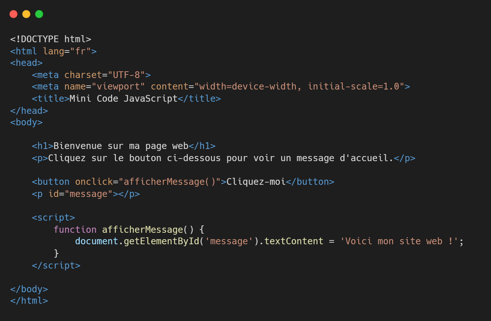

Exemple Javascript
Chose essentielle
Les concepts JavaScript essentiels comprennent :
Variables pour stocker des données. Par exemple, let et const sont utilisés pour créer des variables qui peuvent contenir des chaînes de caractères, des nombres, ou d'autres types de données ;
Fonctions pour encapsuler du code réutilisable. Elles permettent d'organiser le code en blocs logiques. Par exemple, une fonction function greet() {} peut être appelée à plusieurs endroits dans le script ;
Conditions (if, else) pour prendre des décisions basées sur des expressions logiques. Elles permettent d'exécuter différents blocs de code selon les conditions, comme if (x > 10) {} ;
Boucles (for, while) pour répéter l'exécution d'un bloc de code. Elles sont utiles pour parcourir des listes ou effectuer des actions répétitives jusqu'à ce qu'une condition soit remplie ;
Événements pour réagir aux actions des utilisateurs, comme les clics, le survol ou les frappes au clavier. Par exemple, element.addEventListener('click', function() {}) exécute une action lorsqu'un élément est cliqué ;
Sélecteurs DOM pour manipuler les éléments HTML. Par exemple, document.querySelector() permet de sélectionner et de modifier les éléments d'une page web ;
Tableaux (Arrays) pour stocker et manipuler des listes de données. Par exemple, let fruits = ['apple', 'banana', 'cherry'] permet de regrouper des valeurs dans une structure ordonnée ;
Objets (Objects) pour stocker des données complexes sous forme de paires clé-valeur. Par exemple, let person = {name: 'Alice', age: 25} permet de regrouper des informations sur une entité ;
Promises et async/await pour gérer les opérations asynchrones, comme les requêtes réseau. Elles permettent de structurer le code de manière plus lisible tout en gérant les retours différés ;
Manipulation du DOM pour créer, modifier ou supprimer des éléments HTML directement depuis le JavaScript, ce qui rend les pages interactives et dynamiques ;
APIs pour interagir avec des services externes ou des fonctionnalités du navigateur, comme les API de géolocalisation ou de stockage local ;
et Console et débogage pour tester et corriger le code à l'aide d'outils comme console.log() pour afficher des messages de débogage dans la console du navigateur.